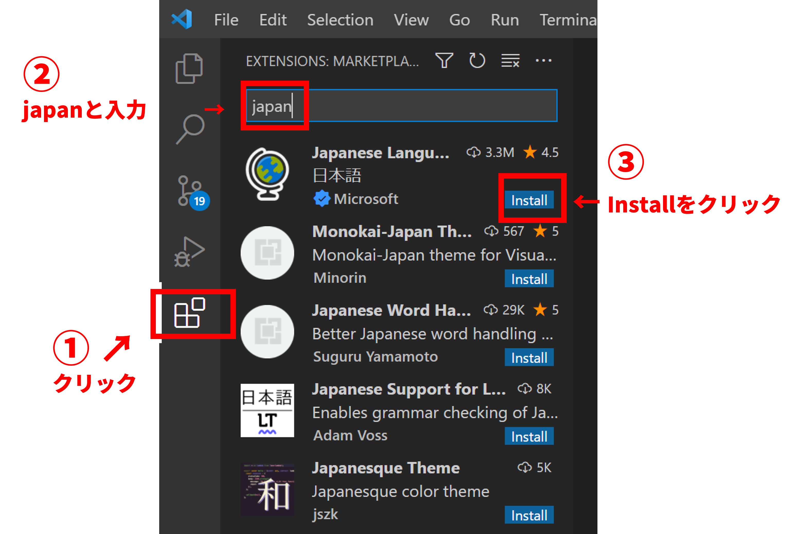
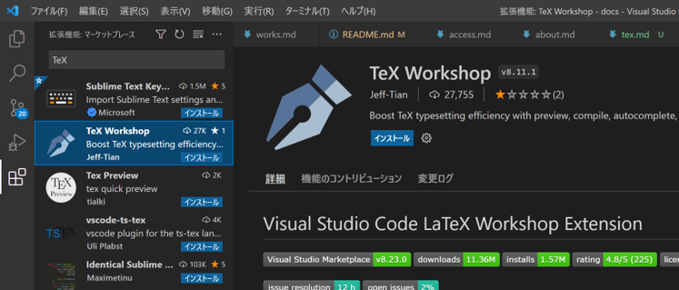
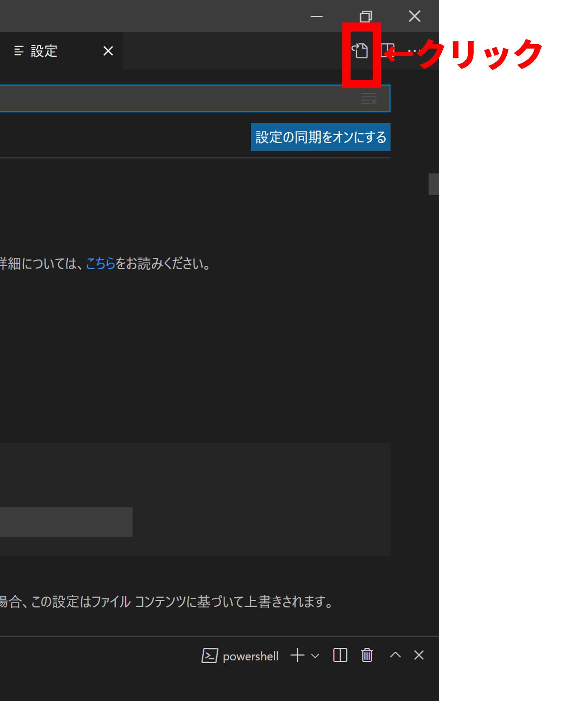
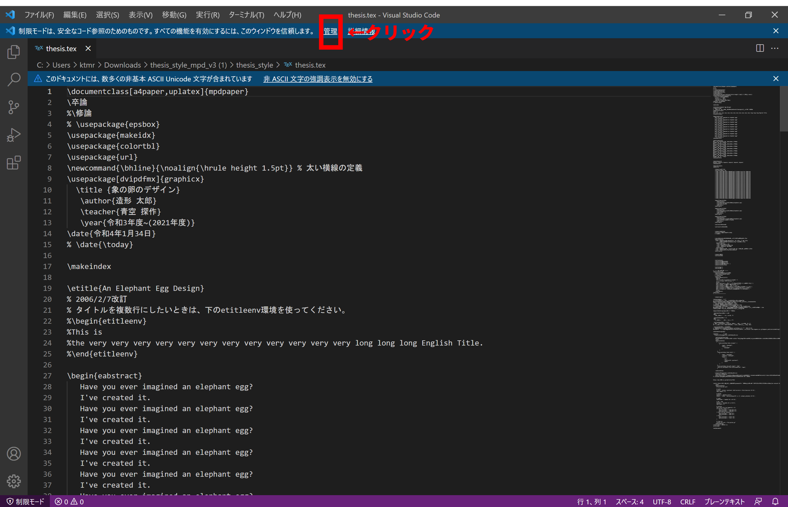
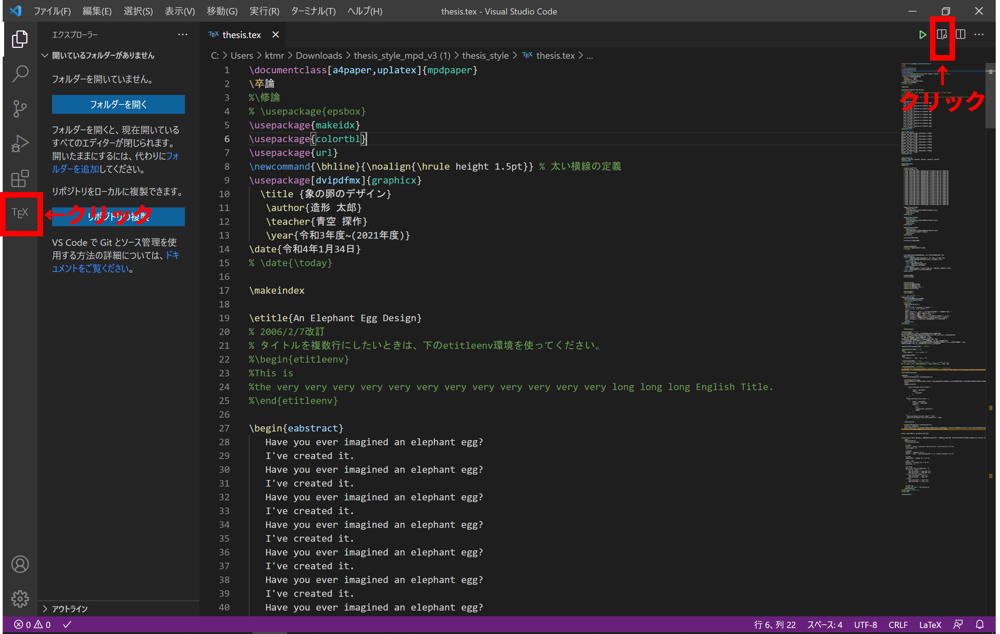

# 卒論のためのTeX環境構築方法
# こちらのページについて
こちらのページでは、香川大学造形メディアデザインコースの卒論をTeX（テフ）で作成したい人のために、その環境構築方法について簡単に説明します。 なお、ここで紹介する方法が唯一無二ではございません。
# 前提とするPCの環境
Windows10もしくはmacOS Monterey
※ 動作確認済のOSです。macOSの場合はもう少し古くても大丈夫かもしれません。
# ダウンロードしインストールするソフトウェアは２つ
- Windows10の場合はTeX LiveとVisual Studio Code（以下、VSCode）
- macOSの場合はMacTeXとVisual Studio Code（以下、VSCode）
# 注意点
TeX Liveのインストールにはかなりの時間を要します。MPDコース４回生に所有者の多いLet's noteだと7時間超えの報告も受けています。 そのため、就寝前に電源オプションでスリープしない設定をしたのちにインストールすることをおすすめします。
# ダウンロードおよびインストールの方法
TeX Live、MacTeX、VSCodeのインストールについては、さまざまなサイトで解説されているので、ここではとりあげません。 （そのうちこちらでも解説するかもしれませんが・・・）
ちなみに、今回参考にしたサイトはこちら (opens new window)です。 ダウンロードからインストールまでに関しては、こちらのサイト (opens new window)などを見ながら進めていって大丈夫です。インストールから先の細かい設定は下記を参考にするとうまくいくはずです。
また、「TeX Liveのインストール時間がない」という方にはこちらのサイト (opens new window)の方法が参考になるかもしれません（私は試していませんので自己責任でお願いします）。
# PCの設定
# ファイル名拡張子と隠しファイルの表示
ファイル名拡張子と隠しファイルが表示されるようにしてください。 「ファイル名拡張子と隠しファイルの表示」で検索すればすぐに出てきます。
ちなみにWindows10の場合は、窓キー→「エクスプローラー」と入力→出てきたウィンドウメニューの表示にある「ファイル名拡張子」「隠しファイル」にチェックをいれます。
# .latexmkrcの作成と格納
- メモ帳（macOSの場合はテキストエディット）を開いて、下記のコードをコピペしてください。
#!/usr/bin/env perl
$latex = 'lualatex -synctex=1 %O %S';
$bibtex = 'pbibtex %O %B';
$pdflatex = 'lualatex -shell-escape';
$makeindex = 'mendex %O -o %D %S';
$pvc_view_file_via_temporary = 0;
$max_repeat = 5;
- メモ帳の場合は、ファイル→名前をつけて保存をクリックしてください。ファイル名は
.latexmkrcです。なお、ファイルの種類は「すべての種類」とします。保存場所は左のナビゲーションウィンドウからLocal Disk(C:)をクリック、ユーザーをクリック、PCに名付けているユーザー名をクリックした所です。Macの場合は、$HOMEすなわち/Users/<ユーザー名>に保存してください。
# VSCodeの設定
# 日本語化
VSCodeの日本語化は拡張機能で簡単に実現します。下図に示す流れの通り、VSCodeの左側のアイコンの一番下をクリックし、出てきたテキストボックスにJapanと入力、一番上に出てきたのをInstall後、VSCodeを再起動すれば日本語化されているのを確認できます。
# TeX Workshopのインストール
上記日本語化と同じ要領でTeX Workshopをインストールし、VSCodeを再起動してください。 
# setting.jsonの書き換え
左下の歯車アイコンをクリックし、設定を選択してください。
次の画像の赤枠のアイコンをクリックしてください。 
出てきた{}setting.jsonを次のコードに書き換えてください。こちらもコピペで問題ないです。
{
"latex-workshop.latex.autoBuild.run": "onFileChange",
"latex-workshop.latex.recipes": [
{
"name": "latexmk",
"tools": ["latexmk"]
},
{
"name": "latexmk (latexmkrc)",
"tools": ["latexmk_rconly"]
},
{
"name": "latexmk (lualatex)",
"tools": ["lualatexmk"]
},
{
"name": "pdflatex ➞ bibtex ➞ pdflatex ^2",
"tools": ["pdflatex", "bibtex", "pdflatex", "pdflatex"]
}
],
"latex-workshop.latex.tools": [
{
"name": "latexmk",
"command": "latexmk",
"args": [
"-synctex=1",
"-interaction=nonstopmode",
"-file-line-error",
"-pdfdvi",
"%DOC%"
]
}
],
"latex-workshop.view.pdf.viewer": "tab"
}
# VSCodeでTeXファイルを開くための作業
ここからは、香川大学創造工学部造形・メディアデザインコースの卒論用TeXセットthesis_mpd_lualatex.zipがお手元にある前提の話になります。こちらに関しては各自ご準備ください（許可が出たらこちらのサイトでも配布します）。ちなみに現在最新のセットはthesis_mpd_lualatex_v1.zipです。
thesis_mpd_lualatex.zipを解凍（右クリックメニューで「すべて展開」）し、デスクトップやドキュメントなど好きな場所に置いてください
TeX Workshopのバージョンによっては，Windowsの日本語版との相性が悪い時があります．そのような場合は，編集したいTeXファイルを C:\texlive などに適当なフォルダを作り，その中で作業をするとよいかもしれません．
thesis_style_mpdフォルダ→thesis_styleフォルダ内のthesis.texを右クリックし、「プログラムから開く」→「別のプログラムを選択(C)」→Visual Studio Codeを選択、「常にこのアプリを使って.texファイルを開く」にチェックを入れ、OKボタンを押下してくださいすると下図のような画面が表示されるはずです。されなかったら読み飛ばしても大丈夫です。 
上部の管理ボタンを押すと、下図の画面になります。
- 上図のように、「信頼する」を選択し、編集したい
thesis_style_mpdフォルダを選択してください。その後、上部のワークスペースの信頼タブを閉じてください。
これですべての環境設定は終了です。
# VSCodeでのTeXの編集方法
ここからは、具体的な操作方法について簡単に述べていきます。
まず、下図に示す２つの箇所をクリックしてください 
サンプルとして用意されている画面が見えてきましたね。試しに、「象の卵のデザイン」のところを適当に変え、Ctrl+S（MacならCommand+S）で保存してみてください。しばらく待つと右に表示されているPDFに変化がみられるはずです（うまく反映されない場合は、もう一度Ctrl+S（MacならCommand+S）するとうまくいくことがあります）。
ちなみに、
%はコメントアウトです。生成されるPDFには反映されません。修正前の文章やメモを残しておきたい場合にはとても役に立ちます。こちら、複数行を選択してCtrl+/（キーボードの"め"）でまとめてコメントアウトができます。
# 図の画像形式について
図の画像形式についてはPDF形式が望ましいですが、JpegやPNGなどでも問題ないです。あまり低画質ですと印刷時にぼやけますので注意しましょう。
# その他
まずはサンプルの日本語の箇所や図表から変更し、どうなるのか試していってください。その後、数式や90度回転させた大きな表など、卒論内で表現したいことについて、いろいろ試すとよいでしょう。TeXは先人による膨大な情報がネット上に転がっています。検索すれば何らかの解が見つかるでしょうし、詳しそうな教員や先輩、同期などに質問してください。本サイトでも余裕があれば追記していきます。
以上です。まだ粗い説明の箇所もあり、随時更新中です。香川大MPDコースの方は気軽に質問やコメントください。